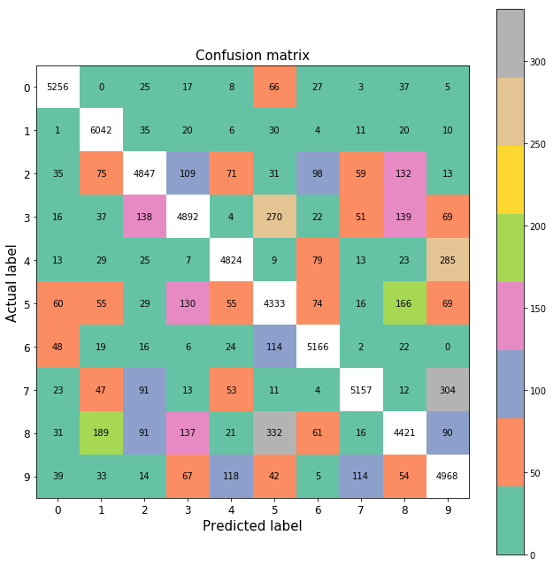
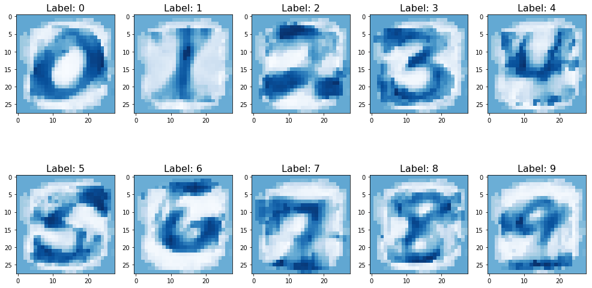

1. Introduction and assumptions
In this post-series, we are going to study the very basic modelling for classification problems with logistic regression algorithms. Classification entails that the output is a discrete variable taking values on a predefined limited set, where the set dimension is the number of classes. Some examples are spam detection, object recognition and topic identification.
We analyzed the theory in the first post, implement the algorithm with Numpy in Part 2 and using Sklearn and Tensorflow in Part 3.
We solved a binary classification problem for multivariate non-linear logistic regression in Scikit-learn in Part 4 and extended the analysis to multinomial classification in Part 5.
After having played with the tic-tac-toe gaming example in Part 6 and with the digits dataset in Part 7, we shift to a bit harder problem, the MNIST dataset.
In this series, we do not split the dataset into training and testing sets, but we assess every model on the training set only. A dedicated post on model selection, overfitting/underfitting problem and regularization will be published soon.
Let’s get started!
2. MNIST dataset collection
The amazing achievements on the digit dataset are also due to the very simple task we were trying to solve, which is not representative of common real-world machine-learning tasks. We are going to introduce the MNIST dataset to increase the challenge by learning techniques and pattern recognition methods on real-world data while spending minimal efforts on preprocessing and formatting.
We are going to retrieve the dataset from Yann LeCun page and load it with the input_data module from TF.
You can follow this tutorial to set everything up.
import tensorflow as tf
from tensorflow.examples.tutorials.mnist import input_data
mnist = input_data.read_data_sets("data/MNIST_data/", one_hot=True)
Extracting MNIST_data/train-images-idx3-ubyte.gz
Extracting MNIST_data/train-labels-idx1-ubyte.gz
Extracting MNIST_data/t10k-images-idx3-ubyte.gz
Extracting MNIST_data/t10k-labels-idx1-ubyte.gz
The training and testing datasets contain 55k and 10k examples of (28x28) images, each stored as a flattened (784,) 1D array.
print("Training and testing dataset size: {} - {}".format(mnist.train.images.shape, mnist.test.images.shape))
Training and testing dataset size: (55000, 784) - (10000, 784)
3. Data preprocessing and visualization
We extract 10 examples spanning 3 rows one to another. We need to reshape each (784,) sample into a (28, 28) array to get a human easy-to-read image.
Ncls = 10
Nr, Nc, span = 2, 5, 3
Nel = Nr*Nc
plt.figure(figsize=(18,8))
for idx, (image, label) in enumerate(zip(mnist.train.images[0:Nel*span:span], mnist.train.labels[0:Nel*span:span])):
plt.subplot(Nr, Nc, idx + 1)
plt.imshow(image.reshape(-1, 28), cmap='Blues')
plt.title('Label %i\n' % np.where(label==1), fontsize = 16)
We create a Python dictionary with 10 keys, one for each class.
The corresponding value stores the first encountered image for that class.
The current label is extracted from the one-hot encoding by using the Numpy where function.
spectro = {}
kk = 0
while len(spectro) < 10:
currLabel = str(np.where(mnist.train.labels[kk])[0][0])
if currLabel not in spectro:
spectro[currLabel] = mnist.train.images[kk]
kk += 1
The figure shows a kind of spectrogram of the first image example of the 10 different classes that are stored in spectro.
plt.figure(figsize=(17, 9))
for kk, (label, img) in enumerate(spectro.items()):
plt.subplot(2, 5, kk+1)
plt.imshow(img.reshape(-1, 1), cmap='gist_gray', aspect=0.002)
plt.xticks([])
plt.title('Label: ' + label, fontsize = 16)
In this step, we want to retrieve the average image of each class.
We convert the one-hot encoding to a label encoding by identifying where the only 1 of each label is located.
Within a for-loop through the 10 classes, we take only images related to one specific class.
The rows of the image matrix that correspond to a given class are selected, the average array is obtained by executing the mean along the rows (axis=0) and it is reshaped to get the actual image format.
To get more details about the powerful indexing operation available in Numpy, visit this docs.
Ycls = np.argmax(mnist.train.labels==1, axis=1)
plt.figure(figsize=(17, 9))
for kk in range(10):
plt.subplot(2, 5, kk+1)
plt.imshow(np.mean(mnist.train.images[Ycls==kk, :], axis=0).reshape(-1, 28), cmap='Blues')
plt.title('Label: ' + str(kk), fontsize = 16)
4. Correlation of the 10 classes
We group the 10 average arrays (images) into a list and build a 2D array where row i and column j represent the scalar product between the average arrays of classes i and j.
It is clear that this matrix is symmetric.
meanArrays = [np.mean(mnist.train.images[Ycls==kk, :], axis=0) for kk in range(10)]
corrs = np.zeros((10, 10))
for k1 in range(10):
for k2 in range(10):
corrs[k1, k2] = np.dot(meanArrays[k1], meanArrays[k2])
plt.imshow(corrs, cmap='Blues')
<matplotlib.image.AxesImage at 0x1ee4af835c0>
We take the highest correlating product along the 0-axis and realize that class 1 average image is highly correlated to class 8, while class 5 to class 0.
print("Highest-correlated classes for each of the 10 classes\n{}".format(np.argmax(corrs, axis=0)))
Highest-correlated classes for each of the 10 classes
[0 8 2 3 4 0 6 7 8 9]
5 Building the logistic regression model in Tensorflow
The loss function is easily implemented using the method sigmoid_cross_entropy_with_logits from losses package.
The optimizer object that actually adjusts the model parameters (TF variables) with the gradient descent algorithm.
The next steps to train the model are to:
1. initialize the variables.
2. run a new session, which let us perform the actual computation by exploiting the graph structure previously defined.
3. run the optimizer as many steps as the number of epochs Nepoch.
4. run the model with the final parameter set and store the model output ymdl into the prediction array.
5. retrieve the final parameter values by running a dedicated session. A different way would be to call the global_variables() method and get the variable values by key name.
Nfeat, Ncls = 784, 10
tf.reset_default_graph()
xp = tf.placeholder(dtype=tf.float32, shape=(None, 784))
yp = tf.placeholder(dtype=tf.float32, shape=(None, Ncls))
ww = tf.Variable(np.zeros((784, 10)), dtype=tf.float32)
bb = tf.Variable(tf.zeros([10]))
ymdl = tf.matmul(xp, ww) + bb
ypred = tf.argmax(tf.sigmoid(ymdl),1)
yact = tf.argmax(yp,1)
accuracy = tf.reduce_mean(tf.cast(tf.equal(ypred, yact), dtype=tf.float32))
mdlLoss = tf.reduce_mean(tf.nn.softmax_cross_entropy_with_logits(logits=ymdl, labels=yp))
optimizer = tf.train.AdamOptimizer(learning_rate=0.01).minimize(loss=mdlLoss)
# GradientDescentOptimizer
print('Input shape: {}'.format(xp.shape))
print('Ground-truth output shape: {}'.format(yp.shape))
print('Weight shape: {}'.format(ww.shape))
print('Model output shape: {}'.format(ymdl.shape))
Input shape: (?, 784)
Ground-truth output shape: (?, 10)
Weight shape: (784, 10)
Model output shape: (?, 10)
6. Training the model
We train the model for 200 steps, defined by the number of epochs Nepoch, until we get a model accuracy of 90%.
Nepoch = 200
Nbtc = 100 # number of batches
init = tf.global_variables_initializer()
XX, Yclass = mnist.train.images, mnist.train.labels
with tf.Session() as sess:
sess.run(init)
Jevol = []
for kk in range(Nepoch):
Xbatch, Ybatch = mnist.train.next_batch(Nbtc)
mdl_loss, _ = sess.run([mdlLoss, optimizer], feed_dict={xp: Xbatch, yp: Ybatch})
if kk%50 == 0:
Jevol.append((kk, mdl_loss))
print('The current model loss is {}'.format(mdl_loss))
if kk==Nepoch-1:
print('The final model loss is {}'.format(mdl_loss))
trainAcc = sess.run([accuracy], feed_dict={xp: mnist.train.images, yp: mnist.train.labels})[0]
print('The final model accuracy is {}'.format(trainAcc))
Wcoef = sess.run(ww, feed_dict={xp: XX, yp: Yclass})
Ypred_tf, Yact = sess.run([ypred, yact], feed_dict={xp: XX, yp: Yclass})
mdlAcc = sess.run([accuracy], feed_dict={xp: XX, yp: Yclass})[0]
The current model loss is 2.3025853633880615
The current model loss is 0.3165014386177063
The current model loss is 0.4505566358566284
The current model loss is 0.25453245639801025
The final model loss is 0.3332114517688751
The final model accuracy is 0.9073818325996399
print("Accuracy: {}".format(metrics.accuracy_score(Yact, Ypred_tf)))
print("Precision: {}".format(metrics.precision_score(Yact, Ypred_tf, average='weighted')))
print("Recall: {}".format(metrics.recall_score(Yact, Ypred_tf, average='weighted')))
Accuracy: 0.9073818181818182
Precision: 0.9079350099345992
Recall: 0.9073818181818182
7. Model accuracy
We define the confusion matrix also for the MNIST case. For the sake of readability, we set the diagonal values to NaN to prevent everything else to collapse to the bottom colormap (green).
cm = metrics.confusion_matrix(Yact, Ypred_tf)
cmDisp = cm.astype(float)
#cmDisp[cmDisp==0] = np.nan
cmDisp[np.diag_indices(Ncls)] = np.nan
plt.figure(figsize=(9,9))
plt.imshow(cmDisp, interpolation='nearest', cmap='Set2') # cmap='Pastel1'
plt.title('Confusion matrix', size = 15)
plt.colorbar()
tickMarks = np.arange(10)
tickLabels = [str(num) for num in range(10)]
plt.xticks(tickMarks, tickLabels, size = 10, fontsize=12)
plt.yticks(tickMarks, tickLabels, size = 10, fontsize=12)
plt.tight_layout()
plt.ylabel('Actual label', size = 15)
plt.xlabel('Predicted label', size = 15)
width, height = cm.shape
for x in range(width):
for y in range(height):
plt.annotate(str(cm[x][y]), xy=(y, x), horizontalalignment='center', verticalalignment='center')

8. Error analysis
In this section, we analyze the misclassified images. The figure shows 12 cases, where each chart reports the actual and predicted classes of the corresponding image.
misclassified = np.where(Yact != Ypred_tf)[0]
Nr, Nc, span = 3, 4, 3
Nel = Nr*Nc
plt.figure(figsize=(18,14))
for qq, idx in enumerate(misclassified[:Nel*span:span]):
img, label = mnist.train.images[idx], mnist.train.labels[idx]
plt.subplot(Nr, Nc, qq+1)
plt.imshow(img.reshape(-1, 28), cmap='Blues')
plt.title('Actual/predicted labels: {}/{}'.format(str(Yact[idx]), str(Ypred_tf[idx])), fontsize = 14)
This step is one of the most important in the machine-learning field.
To analyze the model errors and try to come up with new ideas either to change the architecture or the hyperparameters of the model itself.
We can clearly spot how frequently class 5 has been misclassified.
This fact is coherent with poor correlation for class 5 with itself.
Recall that it was indeed more correlated to class 0.
9. Model parameter analysis
In the final section, we display the model parameter (or weight) values stored in the (784,10) 2D array Wcoef.
We can treat this 2D array as a horizontal concatenation of 10 (784,) 1D arrays, one for each class.
Each 1D array stores the weights of every pixel of the image, out of the 784 total ones.
If we reshape this 1D array, we can visually get the alignment between the pixel (inputs) and the weight.
It is very fascinating how the weight contour plot matches the input structure in such a way for you to easily read the class number.
plt.figure(figsize=(17, 9))
for kk in range(10):
plt.subplot(2, 5, kk+1)
plt.imshow(Wcoef[:, kk].reshape(-1, 28), cmap='Blues')
plt.title('Label: ' + str(kk), fontsize = 16)
We did some tests on the parameters’ space shape when the training is much shorter. We stopped the process when the accuracy was only 80%. It is very fascinating how the weight contour plot matches even more strongly the input structure.
plt.figure(figsize=(17, 9))
for kk in range(10):
plt.subplot(2, 5, kk+1)
plt.imshow(Wcoef[:, kk].reshape(-1, 28), cmap='Blues')
plt.title('Label: ' + str(kk), fontsize = 16)
